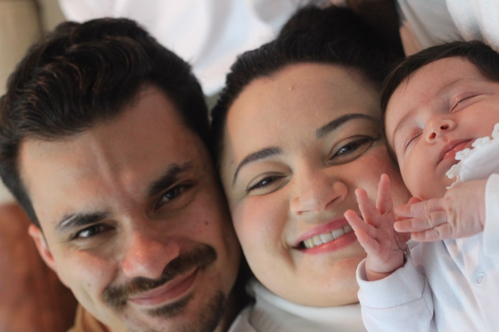

Criciúma - Santa Catarina, Brasil.
Hoje estou em em busca de realizar a minha transição de carreira, desejo entrar no rumo de Desenvolvimento de Software, desde cedo sou ligado a tecnologia. — Hoje cursando Ciências da Computação (UNESC) e me dedicando para me tornar um profissional em densenvolvimento.
Antes desse novo objetivo, trabalhei durante 4 anos como Gestor de Tráfego Pago (Meta Ads, Google Ads e LinkedIn Ads), gerenciando mensalmente mais de R$100.000 em mídia paga e entregando resultados como R$1,5 milhão em receita gerada em um único mês na V4 Company. Essa trajetória me deu uma base sólida de experiências em comunicação, leitura de dados, estratégias lógicas orientadas a métricas e trabalho sob pressão — habilidades que desenvolvi e desejo aplicar em minha carreira como desenvolvedor.
Busco uma posição para aprender mais sobre software e se necessário colocar minhas experiçências em prática para agregar a equipe.
Desde 2022, venho construindo minha carreira em Gestão de Tráfego Pago, atuando tanto em agências quanto em projetos autônomos. Ao longo dessa trajetória, planejei, executei e otimizei campanhas em Meta Ads, Google Ads e LinkedIn Ads, com foco principal em geração de leads qualificados, mas também atuando em objetivos como vendas diretas e engajamento.
Essa experiência me deu domínio prático em áreas como relacionamento com clientes, análise de dados, estratégia digital, implantação comercial e integração de CRM — competências que hoje carrego comigo na transição para o Desenvolvimento de Software, unindo visão de negócio a raciocínio técnico.
Meta Ads, Google Ads, LinkedIn Ads, Análise de métricas, Funis de conversão, Copywriting e Relacionamento com clientes
Trabalhei como assistente administrativo, ajudando no controle de frota, geração de notas fiscais, organização de documentos e manutenção de computadores, além de executar tarefas variadas.
Rotinas administrativas
Após trabalhar por mais de um ano como PCP(Programação e Controle de Produção) fui efetivado como Expedidor. Foi onde trabalhei por um período no chão de fábrica.
Expedição
Entrei na Sical | Fundição e Usinagem como menor aprendiz na área de PCP(Programação e Controle de Produção). Foi onde adquiri uma noção de como funciona produções dentro de fábricas, principalmente na produção de peças de fundição.
Rotinas administrativas
Contato com Devedores: Realizar ligações e responder a contatos(por telefone, WhatsApp, e-mail) para negociar débitos de contratos em atraso (como financiamentos de veículos, empréstimos ou cartões).
Cobrança interna
Contato com Devedores: Realizar ligações e responder a contatos(por telefone, WhatsApp, e-mail) para negociar débitos de contratos em atraso (como financiamentos de veículos, empréstimos ou cartões).
Cobrança interna
As habilidades estão descritas com mais detalhes na seção abaixo. Ver descrições completas
Trabalhar com investimentos de clientes me exigiu desenvolver comunicação clara, objetiva e adaptável a diferentes perfis e situações. Aquiri postura para lidar com situações de pressão: apresentar resultados, justificar decisões de investimento e alinhar expectativas exigem transparência e segurança para conduzir a conversa mesmo quando a notícia não é boa.
Como gestor de tráfego, tive muito contato com o comercial dos clientes, aprendendo a lidar e entender suas necessidades. Para que o tráfego pago funcione, é necessário entender o que o cliente quer vender e como ele quer vender.
Semppre busquei fazer minhas próprias manutenções quando algo dava problema. Em casa já abri e consertei do PS2, Xbox 360 e PS4, seja pra resolver leitura de disco, manutenção nos controle... Isso evoluiu para montagem de computadores — escolher peças, montar do zero e realizar diagnosticos de hardware.
Investindo e analisando campanhas, anúncios e números gerados, desenvolvi interpretação analítica para a tomada de decisões. Seguindo lógicas, seja ela baseada em números ou estratégias para alcançar melhores resultados.
Desenvolvimento de estratégias para campanhas, desde o básico até níveis avançados em Meta, Google e LinkedIn Ads.
Criação de copys com foco em conversão, utilizando gatilhos mentais e técnicas de persuasão para aumentar o engajamento e a taxa de conversão.
Além da minha trajetória profissional e acadêmica, gostaria de falar um pouco sobre minha vida pessoal. Tenho 24 anos e sou marido e pai da Teresa, minha filha, que nasceu em julho e hoje é basicamente a minha principal motivação. Ser pai mudou bastante minha forma de enxergar o tempo e as prioridades — inclusive foi um dos motivos que me fez repensar onde eu queria estar profissionalmente nos próximos anos.
Após alguns anos trabalhando com gestão de tráfego pago dentro de agências, decidi buscar um futuro melhor. Sempre fui o tipo de pessoa que gosta de entender como a tecnologia funciona. Desde criança, faço minhas manutenções e montagens em hardware. Foi um dos principais motivos pelos quais escolhi cursar Ciências da Computação.
Fora do trabalho e da faculdade, meu momento de descanso é no videogame. Jogo bastante CS2, mas ainda ligo o PS2 para jogar games nostálgicos. Já fui bem ativo em basquete e vôlei, mas confesso que a rotina de faculdade + trabalho + família tomou esse espaço por enquanto — mas quero voltar quando eu tiver tempo.
Meu próximo passo, após formado, é realizar um curso de inglês — sei que é praticamente obrigatório para quem quer crescer em tecnologia, e já está no radar.
No fim das contas, sou um cara que está em busca de um futuro melhor para mim e minha família, trocando de área no meio da correria, tentando dar conta de tudo, e ainda assim, de vez em quando, arranjo um tempinho para jogar um pouquinho.

Foto 1